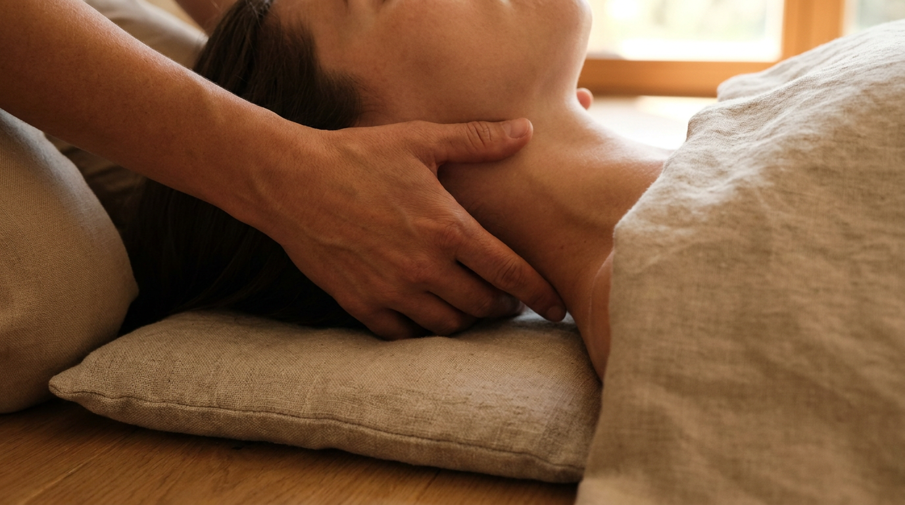
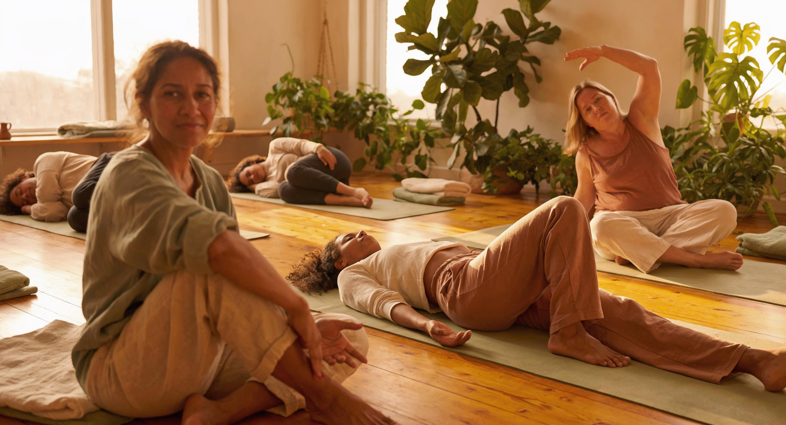
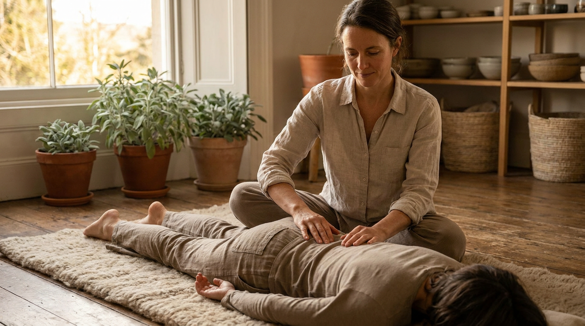

A 6 or 8-session personalised journey to bring mindfulness and neuroscience-backed practices into your daily life.

This is not a generic seated meditation course. It is a personalised, neuroscience-backed programme built around how your nervous system works — your stress patterns, your schedule, your life.
Isabelle integrates the latest mindfulness research, polyvagal theory and somatic awareness to design a practice that is genuinely fitted to you. Rather than giving you a method and asking you to adapt to it, she begins by understanding how you function under pressure — and builds from there.
Sessions are 1:1, conducted online or in-person in Singapore and Japan. The result is a mindfulness practice that doesn’t disappear after two weeks — because it was designed for your actual life from the start.
The neuroscience of attention and awareness. How the mind creates stress loops — and how mindfulness interrupts them at source, before they escalate into overwhelm.
Using the breath as a tool to shift your nervous system state in real time — in meetings, at your desk, between calls. Practical, immediate and always available.
Learning to read your body’s signals before they escalate. The body gives early warning of stress and overwhelm — most of us are trained to override it entirely.
Cognitive defusion and acceptance techniques drawn from neuroscience and mindfulness research. Learn to observe your thoughts rather than be hijacked by them.
Mapping your personal stress patterns and designing micro-interventions for the moments that matter most — targeted, bespoke and rooted in your real daily context.
Building a sustainable practice that doesn’t require 45-minute blocks of silence. Mindfulness designed for people with real schedules and real demands.

A free 30-minute consultation to understand your stress patterns, lifestyle and goals. Isabelle designs your entire programme from this conversation — nothing is generic or pre-packaged.
Establishing core mindfulness skills: breath awareness, body scanning and cognitive defusion. You begin practising between sessions — small, sustainable, immediately applicable.
Applying mindfulness directly to your specific triggers and high-pressure moments. Stress architecture mapping — locating exactly where and how your system is most vulnerable.
Consolidating your personal practice into full autonomy. You leave with a written practice guide tailored to your daily life — something you can return to and build on independently.
Most people have downloaded the apps. Many have attended a course or two. Very few have maintained a consistent practice — not because they lack discipline, but because the programmes weren’t designed for their lives.
This programme is different because it begins with you. Your schedule. Your stress patterns. Your nervous system’s particular way of responding to pressure. Isabelle builds the practice around what she learns in your discovery call — which is why it tends to stick when other approaches haven’t.

“I’d tried every meditation app. Nothing stuck. Isabelle’s approach was completely different — she built the practice around my actual life. Three months in, I haven’t missed a day.”
“The neuroscience framing made this real for me. I finally understood WHY mindfulness works, and that understanding changed everything about how I practised it.”
“I came in sceptical. Twelve weeks later I’m sleeping better, reacting less and thinking more clearly than I have in years.”